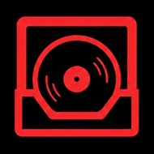

CrateBuilderRemote| Title / Group ▾Click to sort. Drag onto another header to reorder columns — the order is remembered between sessions. | Channel | Genre | Platform | Upload | Downloaded | Bitrate |
|---|---|---|---|---|---|---|
| ▾ YouTube 840 tracks | ||||||
| ▾ House 312 | ||||||
| ▾ Deep House Daily 81 | ||||||
| Sundown Terrace | Deep House Daily | House | YouTube | 2026-05-19 | 2026-08-25 14:19 | 320 |
| Amber Rooms (Original Mix) | Deep House Daily | House | YouTube | 2026-05-11 | 2026-08-25 14:20 | 320 |
| Terrace Dub | Deep House Daily | House | YouTube | 2026-04-28 | 2026-07-02 09:14 | 192 |
| ▸ Techno Warehouse 129 | ||||||
| ▸ SoundCloud 364 tracks |
| Channel | URL Link | Folder | Platform | Genre | Last scan | Pending new | Total dl'd | Status | |
|---|---|---|---|---|---|---|---|---|---|
| Deep House Daily | youtube.com/@DeepHouseDaily | YouTube/House/Deep House Daily -(Complete Catalog)- | YouTube | House | 14:22 | 7 | 81 | idle | |
| Can't be cleaned while this channel is downloading — its folder is being written to. Wait for the run to finish, then tick it. | Neon Bass Radio | soundcloud.com/neonbassradio | SoundCloud/Drum n Bass/Neon Bass Radio | SoundCloud | Drum n Bass | 14:22 | 12 | 214 | downloading |
| Techno Warehouse | youtube.com/@TechnoWarehouse | YouTube/Techno/Techno Warehouse -(Complete Catalog)- | YouTube | Techno | 14:20 | 0 | 129 | idle | |
| Liquid Sessions | soundcloud.com/liquidsessions | SoundCloud/Drum n Bass/Liquid Sessions | SoundCloud | Drum n Bass | 14:21 | 3 | 58 | idle | |
| Can't be cleaned until this channel's link is resolved — without a canonical channel id there is no live listing to compare the folder against. Use Fix Link on the Watch List first. | Garage Archive | unresolved — folder name only | YouTube/UK Garage/Garage Archive | YouTube | UK Garage | 14:22 | 41 | 12 | needs link |
| Track | Channel | Platform | Embedded | Sidecar | On Disk |
|---|---|---|---|---|---|
| Sundown Terrace | Deep House Daily | YouTube | ✓ | .artwork/kX9pL2.jpg | ✓ |
| Amber Rooms (Original Mix) | Deep House Daily | YouTube | ✓ | .artwork/m2Vq81.jpg | ✓ |
| Terrace Dub | Deep House Daily | YouTube | ✗ | .artwork/p04Nz9.jpg | missing |
| Fracture Point | Neon Bass Radio | SoundCloud | ✓ | .artwork/sc-88213.jpg | ✓ |
| Bassline Study 04 | Garage Archive | YouTube | ✗ | — | — |
On the desktop app open Settings → Remote Access, then scan this code — or type the pairing code below.
Code expires in 4:32
Wraps the control itself. 350 ms hover delay, instant on keyboard focus, dismissed on Escape, long-press on touch. Used on every button in the app.
A 14px outlined box after a Settings row, matching _settings_help. Used where the label needs more than a sentence.
On a disabled control, the tooltip explains why, matching _wl_celltip. Never disable a control without one — the reason string already exists in _wl_eligible.
This folder has no canonical channel id, so scans fall back to the folder name. Pick the channel it belongs to — the top matches from a YouTube search for "Garage Archive".
Paste the channel (…/@handle or …/channel/UC…) or a playlist URL. Leave as-is to keep the current channel.
✓ Folder was moved out of band — the database has been re-linked to the current location (House).
| File | Size | Modified | Reason | |
|---|---|---|---|---|
| ☑ | Sundown Terrace (Radio Edit).mp3 | 8.4 MB | 2026-06-02 | Not in channel listing (id match) |
| ☑ | Terrace Dub (Unreleased).mp3 | 11.2 MB | 2026-05-18 | Not in channel listing (id match) |
| ☐ | Amber Rooms (VIP Mix).mp3 | 9.1 MB | 2026-04-27 | Title-only match — weak |
| ☐ | Live at Terrace, 2025.mp3 | 184.0 MB | 2026-03-09 | No video id recorded — weak |
One shell for all three long jobs — Rebuild Database, Repair Track Tags and Fetch Missing Artwork. Fetch Artwork adds a per-track Skip; the others have Cancel only.
*(For any bugs encountered or suggestions you'd like to make, submit them using the Submit Issues/Suggestions button.)
Tooltips are live — hover any control. 3l shows the three affordances pinned open, so the pattern reads without covering the screens. Copy is lifted verbatim from the tkinter Tooltip(...) and _settings_help(...) calls; remote-only controls are marked source: new in the contract.
Handoff for the VS Code session: HANDOFF.md (stack decision, architecture, phases, acceptance criteria, files to touch), ui-contract.json (API methods, events, every settings key, the full tooltip registry with source line numbers, column definitions), theme.css (drop-in tokens and components).